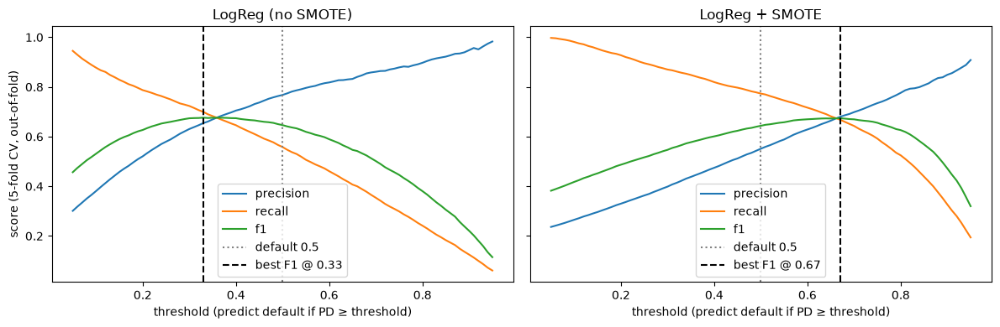

Evaluation design
All choices were made on the training set with cross-validation; the test set was used exactly once, at the end.
The three settings compared on this site (they differ only in what is known when the
decision is made):
Reference a loan that is already priced: the applicant's grade and the interest rate are both known.
Pipeline A a graded applicant: the applicant has a grade (A–G, a credit-history rating like a credit score), the interest rate is not set yet.
Pipeline B a newcomer: no grade and no rate, only what the applicant tells us.
Why we compare all three →
Reference a loan that is already priced: the applicant's grade and the interest rate are both known.
Pipeline A a graded applicant: the applicant has a grade (A–G, a credit-history rating like a credit score), the interest rate is not set yet.
Pipeline B a newcomer: no grade and no rate, only what the applicant tells us.
Why we compare all three →
Split, cross-validation and the test set
32,409 applicants
├── TEST 20% (6,482) ───────────── locked; used once, in notebook 11, after every choice was frozen
└── TRAIN 80% (25,927)
├── 5-fold stratified cross-validation (same folds for every model)
│ → choose hyperparameters (mean validation F1 or RMSE)
│ → choose the decision cutoff (out-of-fold predictions)
│ → choose the PD calibration (lowest Brier score)
│ → compare models and choose one per setting
└── refit the chosen models on all 25,927 → predict the test set once
- Stratified split and folds: every fold keeps the 21.9% default rate, so scores differ because of the model, not luck.
- 5 folds: every training applicant is used for validation exactly once; models are judged by the mean over the 5 rounds, never the best round.
- Tuning is separate from testing: the test set played no part in any choice. Its scores are reported with a bootstrap 95% interval.
Choosing the decision cutoff
A model says "default" when its PD is at or above a cutoff. The default 0.5 is not best when only 22% default. We tried every distinct out-of-fold score as the cutoff (an exact search, ~25,000 candidates) and kept the one with the highest F1, then checked it beat 0.5 in each fold. The chosen cutoffs are about 0.37–0.39 on the calibrated PD scale. You can move the cutoff yourself on the Explore tab.

Metrics, and why each was chosen
| Metric | What it measures | Why we use it |
|---|---|---|
| F1 (main) | balance of precision and recall for defaulters | rewards catching defaulters (protects the lender) without wrongly declining good customers; "everyone repays" scores 0 |
| Precision | of applicants flagged, the share who really default | cost of declining good customers |
| Recall | of real defaulters, the share flagged | cost of lending to people who will not repay |
| ROC-AUC | how well risky applicants are ranked above safe ones, at any cutoff | separates ranking quality from the choice of cutoff |
| Brier score | mean of (PD − outcome)² | accuracy of the probability itself, needed because the PD is shown to users and drives pricing (guessing 0.219 for everyone gives 0.171) |
| ECE, mean PD | average gap between predicted PD and actual default rate | checks calibration: does PD 0.3 really mean 30%? |
| RMSE (rates) | typical error of the suggested rate, in percentage points | in the units a borrower cares about |
| R² (rates) | share of the variation in rates explained | comparable across pipelines (0 = no better than the average rate) |
| Accuracy | share of correct predictions | reported only next to its 78% "everyone repays" baseline; misleading on its own |